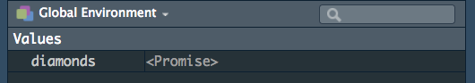
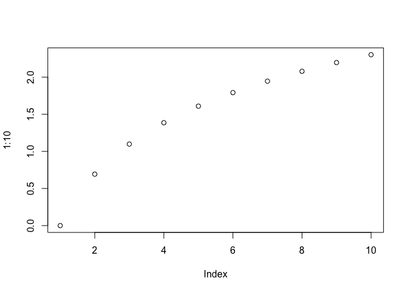

About lazy evaluation
A follow-up on Thomas Lumley follow-up post on Miles McBain post about quotation.
In this post, Thomas is continuing Miles exploration of the concept of quoting and evaluation in R. Thomas speaks a little bit about lazy evaluation, and I decided to continue to explore this concept. Notably I wish to start over from on this quote from the blog post:
“In reality, to allow for lazy evaluation, R has a special data structure called a promise, which stores the expression until you look at it then evaluates it. R also has substitute() to get the expression out of the promise.”
Lazy Eval: a starting point
I’ve already written about lazy evaluation, but here is more about that concept.
A quick definition
Lazy evaluation is a programming strategy that allows a symbol to be evaluated only when needed. In other words, a symbol can be defined (e.g in a function), and it will only be evaluated when it is needed (and that moment can be never). This is why you can do:
plop <- function(a, b){
a * 10
}
plop(4)
## [1] 40
Here, b is defined as a function argument, but never evaluated. So no
error. This strategy is called “lazy” as it does “the strict minimum” of
evaluation (remember that evaluation is looking for the value of a
symbol).
Lazy evaluation means you can also do:
plop(a = 4, b = non_existing_variable)
## [1] 40
As b is never evaluated, we don’t have any problem, R never tries to
look for the value of non_existing_variable.
We can also find it in control structure:
if (TRUE){
12
} else {
no_variable
}
## [1] 12
And of course this works on the other side:
if (FALSE){
no_variable
} else {
12
}
## [1] 12
Only the TRUE part is evaluated. You can also find it in :
if (TRUE || no_variable) {
12
}
## [1] 12
Note that this won’t work with |, as:
The shorter form performs elementwise comparisons in much the same way as arithmetic operators. The longer form evaluates left to right examining only the first element of each vector. Evaluation proceeds only until the result is determined. (from
?base::Logic)
if (TRUE | no_variable) {
12
}
## Error in eval(expr, envir, enclos): objet 'no_variable' introuvable
Why lazy eval
Lazy evaluation is not R-restricted: it is also found in other languages (mainly functional languages). Its opposite is strict/eager evaluation, which is the default in most programming languages.
Lazy evaluation is implemented in R as it allows a program to be more efficient when used interactively: only the necessary symbols are evaluated, that is to say that only the needed objects will be loaded in memory and/or looked for. The downside being that it can make a program less predictable, as you are never 100% sure a symbol will be evaluated (but this is for more advanced use-cases).
It’s a typical mechanism for functional language, as it allows functions
to be defined without any values in it. That means that you can create
this object without a and b having a value.
ping <- function(a,b){
a + b
}
To quote R: a language for data analysis and graphics:
The expression given as function arguments are not evaluated before the function is called. Instead, the expressions are packaged together with the environment in which they should be evaluated and it is this package that is passed to the function. Evaluation only takes place when the argument is required.
In fact, you’re already familiar with it, as I’m sure you can predict the output of this function:
mean_of_that <- function(x, mean_of = mean(x)){
# Of course I could use na.rm, it's an example ;)
x <- x[!is.na(x)]
print(x)
cat("The mean of x is", mean_of)
}
mean_of_that(c(1,2,3,4,NA))
## [1] 1 2 3 4
## The mean of x is 2.5
Here, if the output does not surprise you, it’s because you already have
understood what is lazy eval (good news, right!): when R tries to
access the value of mean_of, it looks for the value of x. At that
exact moment, as the value of x has changed (no NA), you have the mean
of the new x. If mean_of had been evaluated as soon as the function
was called, the value of mean_of would have been NA.
See also :
ping <- function(a = Sys.time(), b = Sys.time(), c = Sys.time()){
print(a)
Sys.sleep(1)
print(b)
Sys.sleep(1)
print(c)
}
ping()
## [1] "2018-09-04 08:27:00 CEST"
## [1] "2018-09-04 08:27:01 CEST"
## [1] "2018-09-04 08:27:02 CEST"
You can see that each element has a different value. If the elements had
been evaluated at the moment the function was called, they would all
have the same value (i.e the Sys.time of when the function is called).
LazyData, and promises
If specified in the DESCRIPTION, datasets from packages are lazily loaded. It means two things :
- When
library(pkg), the datasets are not loaded in the environment (definitely more efficient) - That you can “preload” them with
data("dataset"), and get a promise back
If you run this in a fresh R session:
library(ggplot2)
data("diamonds")
This is what you’re going to get:

A <Promise>.
At this point, as I still don’t have called the dataset, the symbols
(diamonds) holds a promise to this dataset, which is still not in
memory:
library(pryr)
mem_used()
## 44.6 MB
#Now I need diamonds
nrow(diamonds)
## [1] 53940
mem_used()
## 48.1 MB
As you can see, the memory used by my R session has changed when I
actually needed diamonds. This latter is no longer a promise, but a
loaded dataset in my environment.
Note that substitute doesn’t “break the promise”:
data("txhousing")
mem_used()
## 48.1 MB
substitute(txhousing)
## txhousing
mem_used()
## 48.1 MB
nrow(txhousing)
## [1] 8602
mem_used()
## 48.6 MB
Here is an example of Non-standard evaluation with substitute: even if
I’m passing txhousing as a symbol, substitute(txhousing) does not
behave as nrow(txhousing). The symbol is not evaluated in the standard
way, the promise is still a promise, and the symbol txhousing does not
bring the object in the environment.
Let’s just put it into a function:
substiplop <- function(dataset){
# deparse turns a symbol into a character
name <- deparse(substitute(dataset))
paste("You called", name)
}
library(ggplot2)
mem_used()
## 48.6 MB
substiplop(dataset = economics_long)
## [1] "You called economics_long"
mem_used()
## 48.6 MB
As you can see, no economics_long has been evaluated. Now compare:
nrowplop <- function(dataset){
paste("You called a dataset with", nrow(dataset))
}
mem_used()
## 48.6 MB
nrowplop(dataset = economics_long)
## [1] "You called a dataset with 2870"
mem_used()
## 48.7 MB
Keep all this in mind, we’ll be back to it in a few.
More about lazy evaluation
Ok, now, now let’s dig deeper into lazy evaluation.
RTFM
Let’s start with the beginning: the R-Manuals. promises and lazy
evaluation are referred to several times in the R Language
Definition.
If we go to Promise objects, we learn that :
Promise objects are part of R’s lazy evaluation mechanism. They contain three slots: a value, an expression, and an environment. When a function is called the arguments are matched and then each of the formal arguments is bound to a promise. The expression that was given for that formal argument and a pointer to the environment the function was called from are stored in the promise.
What that means is that: when calling a function, arguments are turned
into promises. These promises contain: an expression, and an
environment (no value at first). In a sense, what this object holds is
not a value, but a recipe for a value, saying “evaluate this
expression in this environment”, and this recipe is called only when we
need it.
Until that argument is accessed there is no value associated with the promise. When the argument is accessed, the stored expression is evaluated in the stored environment, and the result is returned. The result is also saved by the promise. The substitute function will extract the content of the expression slot. This allows the programmer to access either the value or the expression associated with the promise.
So, here’s a clear definition for the substitute function: an
“expression slot content extractor” :) In other words, when passing
arguments to a function, they are immediately turned into a promise, a
data structure with an expression, and a recipe for a value. But here’s
the thing: thanks to lazy evaluation, you can access this expression
without having to actually give an argument a value (i.e., without
having to look for its value).
Remember our function plop, and :
plop(a = 4, b = non_existing_variable)
## [1] 40
With our newly acquired knowledge, we can tell what’s happening here:
b is created as a promise, containing the expression
non_existing_variable. It contains no value, but as we never try to
actually evaluate it (i.e. try to access its value), there is no error.
Let’s continue on that note: b is created as a promise (expression +
environment), and substitute allows to get the expression out of a
promise. So we could modify our function to play with the expression
contained in b:
plop <- function(a, b) {
cat("You entered", deparse(substitute(b)), "as `b` \n")
a * 10
}
plop(a = 4, b = non_existing_variable)
## You entered non_existing_variable as `b`
## [1] 40
But that also means we can evaluate b the way we want (for example to
create a dplyr::pull-like function)
plop <- function(a, b) {
eval(substitute(b), envir = a)
}
plop(iris, Species)[1:10]
## [1] setosa setosa setosa setosa setosa setosa setosa setosa setosa setosa
## Levels: setosa versicolor virginica
plop(iris, Sepal.Length)[1:10]
## [1] 5.1 4.9 4.7 4.6 5.0 5.4 4.6 5.0 4.4 4.9
(More about environment evaluation here)
Or, even, that we could write a dplyr::mutate-like function:
mutator <- function(a, col_name_computation){
# In three steps here to detail the process, could be one line of code
col_name_computation_sub <- substitute(col_name_computation)
res <- eval(col_name_computation_sub, envir = a)
a$new_col <- res
a
}
mutator(head(iris), Sepal.Length * 10)
## Sepal.Length Sepal.Width Petal.Length Petal.Width Species new_col
## 1 5.1 3.5 1.4 0.2 setosa 51
## 2 4.9 3.0 1.4 0.2 setosa 49
## 3 4.7 3.2 1.3 0.2 setosa 47
## 4 4.6 3.1 1.5 0.2 setosa 46
## 5 5.0 3.6 1.4 0.2 setosa 50
## 6 5.4 3.9 1.7 0.4 setosa 54
(Of course, the real dplyr::mutate does A LOT more, it’s just for the
example)
Let’s sum up what is happening here :
- I give
aandnew_colexpressions as inputs - Both
aandnew_colbecome promises, linked to the expressions given as inputs. None are evaluated at this point, thanks to lazy evaluation - R extracts the expression contained in
col_name_computation, puts it incol_name_computation_sub, which is at that stage acall. - I have defined a custom rule for evaluation, and this
callis evaluated in the context of the dataframe given (remember that dataframes are lists, and you canevala symbol inside a list). - This newly created vector is put inside the dataframe as a column
- The modified data.frame is returned
To dissect a little bit what is happening:
mutator <- function(a, col_name_computation){
col_name_computation_sub <- substitute(col_name_computation)
cat("`col_name_computation_sub` is: ")
print(col_name_computation_sub)
cat("its class is: ")
print(class(col_name_computation_sub))
cat("it is evaluated in: ")
print(substitute(a))
res <- eval(col_name_computation_sub, envir = a)
cat("`res` is: ")
print(res)
a$new_col <- res
invisible(a)
}
mutator(head(iris), Sepal.Length * 10)
## `col_name_computation_sub` is: Sepal.Length * 10
## its class is: [1] "call"
## it is evaluated in: head(iris)
## `res` is: [1] 51 49 47 46 50 54
mutator(head(mtcars), mpg * disp)
## `col_name_computation_sub` is: mpg * disp
## its class is: [1] "call"
## it is evaluated in: head(mtcars)
## `res` is: [1] 3360.0 3360.0 2462.4 5521.2 6732.0 4072.5
Detecting promises
In case you were wondering how to check if something is a promise… let’s continue from the manual:
Within the R language, promise objects are almost only seen implicitly: actual function arguments are of this type. There is also a delayedAssign function that will make a promise out of an expression. There is generally no way in R code to check whether an object is a promise or not, nor is there a way to use R code to determine the environment of a promise.
There is a way to create a promise, through the delayedAssign
function. At the time of writing I haven’t found a use case for that,
but I’ll be glad to hear about one in the comment!
delayedAssign("a", this_var)
a
## Error in eval(expr, envir, enclos): objet 'this_var' introuvable
this_var <- 12
a
## Warning: redémarrage de l'évaluation d'une promesse interrompue
## [1] 12
Evaluation, and force()ing evaluation
From Argument evaluation:
The process of filling the value slot of a promise by evaluating the contents of the expression slot in the promise’s environment is called forcing the promise. A promise will only be forced once, the value slot content being used directly later on. A promise is forced when its value is needed.
Forcing is “filling” the value slot of a promise. This can be done by
simply calling the object, or by using the force function (note that
force is just semantic sugar). Let’s see how this can be useful with a
plot (from
Substitutions)
logplot <- function(y, ylab = deparse(substitute(y))) {
y <- log(y)
plot(y, ylab = ylab)
}
logplot(1:10)

Here, as ylab is forced after y has changed, the labels is the one
from the modified y. Which can be changed if we force the ylab before:
logplot <- function(y, ylab = deparse(substitute(y))) {
force(ylab)
y <- log(y)
plot(y, ylab = ylab)
}
logplot(1:10)

As said before: the promise is only forced once, so ylab finds its
value in the first line of code.
Remember our mean_of_that function from before. Look at how it changes
if I force the evaluation of mean_of before changing x:
mean_of_that <- function(x, mean_of = mean(x)){
force(mean_of)
x <- x[!is.na(x)]
print(x)
cat("The mean of x is", mean_of)
}
mean_of_that(c(1,2,3,4,NA))
## [1] 1 2 3 4
## The mean of x is NA
More about lazy evaluation
Here are some random quotes and elements found on the internet, not necessarily linked to R:
-
Lazy Evaluation at the Portland Pattern Repository
Lazy evaluation : Waiting until the last possible moment to evaluate an expression, especially for the purpose of optimizing an algorithm that may not use the value of the expression.
-
Advanced R on Function arguments
Since this method of evaluation runs f as little as possible, it is called “lazy evaluation”. It makes it practical to modularize a program as a generator that constructs a large number of possible answers, and a selector that chooses the appropriate one. While some other systems allow programs to be run together in this manner, only functional languages (and not even all of them) use lazy evaluation uniformly for every function call, allowing any part of a program to be modularized in this way. Lazy evaluation is perhaps the most powerful tool for modularization in the functional programmer’s repertoire.
Lazy evaluation (or call-by-need) delays evaluating an expression until it is actually needed; when it is evaluated, the result is saved so repeated evaluation is not needed. Lazy evaluation is a technique that can make some algorithms easier to express compactly or much more efficiently, or both. It is the normal evaluation mechanism for strict functional (side-effect-free) languages such as Haskell. However, automatic lazy evaluation is awkward to combine with side-effects such as input-output. It can also be difficult to implement lazy evaluation efficiently, as it requires more book-keeping.